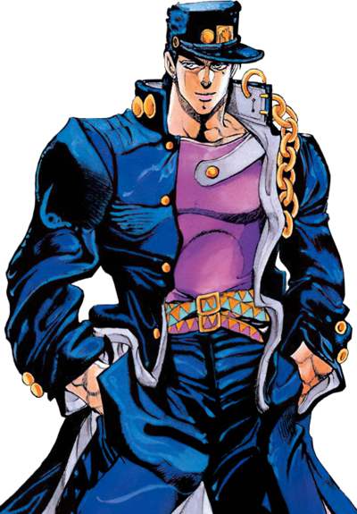

Джотаро Куджо — главный протагонист третьей части серии Невероятные приключения ДжоДжо, Крестоносцы звёздной пыли, и третий ДжоДжо в ней. Он также появляется как главный союзник в Несокрушимом алмазе и Каменном океане, а также ненадолго появляется в Золотом ветре. В результате всех своих появлений, Джотаро - самый возвращающийся ДжоДжо-протагонист в серии.
Представленный как египетский друг Джозефа Джостара, он присоединяется к группе в их путешествии, чтобы победить ДИО, предоставляя знания и рекомендации о вражеских пользователях стендов и местных культурах по пути. Абдул - пользователь стенда и владеет стендом, манипулирующим огнем, Magician's Red.